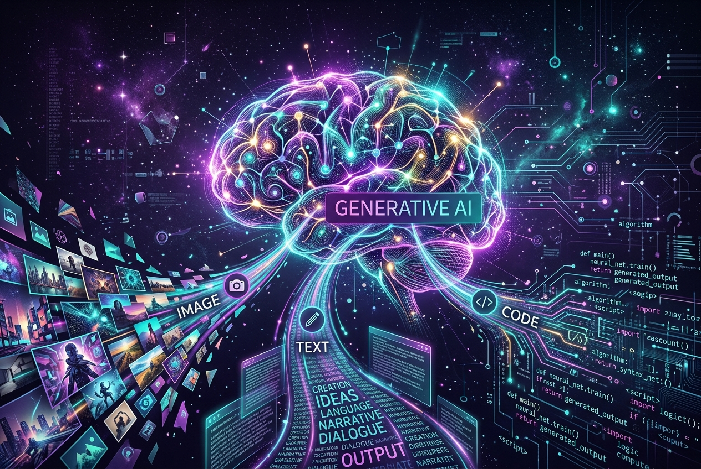
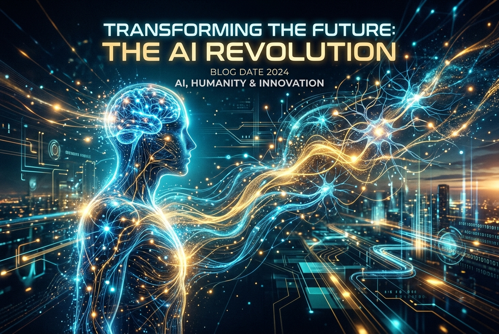

Our Services, Up Close
Pick a service from the list and see exactly what we do, how we do it, and what you can expect from working with us.
Our Services
 Data Science & Predictive Analytics
Data Science & Predictive Analytics
Turning Messy Spreadsheets Into Confident Tomorrow Decisions
Most businesses aren't starved of data — they're drowning in it. You have years of customer orders, invoices, support interactions, and website clicks scattered across tools, but nobody has the time or the tools to connect the dots. We help you transform raw numbers into clear, practical answers that take the guesswork out of running your business.
Inventory Guesswork
Ordering too much stock that ties up capital in warehouses, or stocking out right when demand spikes and losing customers.
Surprise Customer Churn
Only realizing high-value clients are unhappy after they've already canceled, instead of spotting warning signs weeks earlier.
Manual Monday Reports
Teams spending 10+ hours every week downloading CSVs, cleaning spreadsheets, and making charts that are stale by Wednesday.
Blind Pricing Decisions
Guessing discount thresholds without knowing the exact elasticity that maximizes gross profit across seasons.
-
Custom Predictive Models: We build tailored models trained on your specific sales cycles, customer types, and seasonal trends — never a generic, one-size-fits-all formula.
-
Automated Cloud Pipelines: Data flows smoothly from your CRM, ERP, and payment processors straight into clean data warehouses without manual human copying.
-
Living Decision Dashboards: Clean, interactive dashboards that any manager or founder can glance at for 30 seconds and know exactly what actions to take today.
-
Model Health & Accuracy Monitoring: Customer habits shift over time. We continuously track prediction accuracy and recalibrate models so your insights never go stale.
Data Audit
We review your existing databases and spreadsheets to see what is usable today.
Proof-of-Concept
We build a working model in 2 weeks tested against your historical numbers.
Clean Integration
We hook predictions straight into the dashboards and tools your team already uses.
Ongoing Tuning
We review performance monthly to make sure your predictions stay sharp and profitable.
Case in Point: Real Impact
A regional retail distribution client was losing approximately 14% of their margin to overstocked warehouse inventory. Within 90 days of deploying our demand prediction models, their excess inventory dropped by 32% while order fulfillment rates improved from 86% to 98.2%.
 AI Strategy & Roadmap Consulting
AI Strategy & Roadmap Consulting
Practical AI Direction Built for Real Work, Not Conference Slides
Every business owner and executive is being told they must adopt AI immediately or get left behind. But jumping into AI without a clear strategy is the easiest way to burn budgets on flashy tools that nobody ends up using. We help you cut through the marketing hype and build a realistic, ROI-backed roadmap tailored specifically to your company's size, budget, and culture.
Analysis Paralysis
Overwhelmed by hundreds of new AI announcements every week without knowing which ones actually move the needle for your business.
Wasted Software Budgets
Spending tens of thousands on expensive enterprise subscriptions or custom software that employees quietly abandon after two weeks.
Team Resistance & Fear
Staff feeling anxious that AI is here to replace them, leading to hesitation, poor tool adoption, and hidden friction.
Data Privacy Exposure
Unknowingly pasting confidential customer data or contracts into public AI models that store and train on your proprietary IP.
-
Comprehensive AI Readiness Audit: We evaluate your existing data infrastructure, security policies, and team workflows to give you an honest score of what is ready now and what needs cleanup first.
-
Prioritized ROI-Ranked Roadmap: A crystal-clear blueprint that ranks every potential AI project by development cost versus bottom-line return, putting quick wins upfront.
-
Unbiased Build vs. Buy Guidance: We tell you honestly when an inexpensive off-the-shelf software tool solves your problem versus when a custom build provides an undeniable competitive edge.
-
Executive & Team Enablement Workshops: Engaging, hands-on training sessions that teach your managers and teams how to work alongside AI tools safely and productively.
Discovery
We shadow key team workflows to understand where your hours and money actually go.
ROI Scoring
Every candidate project is scored for time-to-value, technical feasibility, and financial upside.
Architecture Plan
A step-by-step implementation guide with recommended tech stacks, costs, and timelines.
Pilot Oversight
We sit alongside your team through the first project rollout to guarantee successful adoption.
Case in Point: Real Impact
A mid-sized professional services firm was about to commit ₹35 Lakhs ($42,000 USD) to an unnecessarily complex bespoke AI tool. Following our 2-week strategic audit, we identified that an optimized combination of open-source models and workflow automation solved their exact bottleneck in 3 weeks at less than 20% of their initial estimated cost.

Generative AI & Custom LLM SystemsIntelligent Assistants That Understand Your Company's Private World
Public tools like ChatGPT are impressive, but they know nothing about your company's product specs, client agreements, past support tickets, or internal procedures. We build private, highly secure Generative AI solutions and custom Large Language Model systems that read your internal knowledge, speak your brand's voice, and assist your team without ever leaking your sensitive data.
Endless Document Searching
Staff losing 45+ minutes every day digging through PDFs, nested Google Drive folders, and emails to answer basic operational questions.
Burned Out Support Teams
Customer support reps spending 80% of their shifts repeating the exact same responses to common questions instead of solving complex tickets.
Repetitive Proposal Writing
Sales and engineering teams drafting client proposals, RFPs, and project summaries from scratch over and over again.
Made-Up AI Answers
Public AI bots hallucinating incorrect facts because they lack verified access to your official internal documentation.
-
Private Knowledge Retrieval (RAG): Assistants connected directly to your private manuals, contracts, and wikis that provide accurate answers and cite the exact source document and page number.
-
Domain-Specific LLM Fine-Tuning: We tune models on your industry's specialized vocabulary — whether in law, medical technology, tax accounting, or specialized engineering.
-
Multi-Channel Deployment: Deploy your assistant wherever your staff or customers are — WhatsApp, Slack, Microsoft Teams, Zendesk, or directly inside your website or web app.
-
Enterprise Guardrails & Privacy: Complete security sandboxing that ensures private company data never leaves your infrastructure or trains public models.
Data Ingestion
We securely connect and vectorize your knowledge base, manuals, and FAQs.
Prompt & RAG Tuning
We build a test prototype within 7 days and benchmark answers against real queries.
Safety Guardrails
We stress-test edge cases to ensure the assistant never invents facts or shares restricted info.
Live Rollout
Seamless deployment with query analytics so you can see what users ask most frequently.
Case in Point: Real Impact
A B2B equipment manufacturer implemented our private RAG assistant across 600 pages of technical machinery manuals. Support engineers cut their average lookup and diagnostic time from 38 minutes down to 45 seconds, boosting first-call resolution by 44% in the first month.
 AI-Powered Intelligent Automation
AI-Powered Intelligent Automation
Let Intelligent Systems Handle the Drudgery So Humans Can Do Great Work
Humans are exceptional at creative problem solving, strategic decisions, and building customer relationships. Humans are terrible at typing invoice numbers into accounting software 300 times a day. We design and build intelligent automation pipelines that handle your high-volume, repetitive digital operations quickly, accurately, and without getting tired.
Invoice & PO Delays
Vendors and orders waiting days for human staff to open email attachments, check numbers, and manually key them into ERP systems.
Costly Human Typos
Accidentally mistyping account numbers, misreading handwritten forms, or billing wrong SKUs, causing expensive reconciliations.
Disconnected Software Silos
Staff spending half their day acting as human bridges — copying data from your CRM into spreadsheets and then into shipping portals.
Customer Backlogs
Customer orders and requests received after business hours sitting unhandled until the next morning, slowing down delivery.
-
Intelligent Document Processing: Computer vision and NLP models that read, extract, and classify data from scanned bills, PDFs, physical receipts, and unstructured email text.
-
End-to-End Workflow Automation: Inbound leads, support tickets, and orders get validated, processed, and routed into your databases automatically 24 hours a day.
-
Human-in-the-Loop Review Portals: The AI handles 95% of standard cases without intervention, and flags only the ambiguous 5% to human managers on an easy visual approval screen.
-
Custom API Connectors: We connect older legacy on-premise software with modern cloud applications so your data flows seamlessly without expensive software migrations.
Process Mapping
We trace every manual click and step to locate your largest operational bottlenecks.
Extraction Model
We train specialized extraction models on your real invoice and form templates.
Parallel Testing
The automated pipeline runs alongside your team until accuracy meets strict 99%+ standards.
Full Deployment
Complete rollout with live error-handling alerts whenever vendor layouts change.
Case in Point: Real Impact
A logistics and freight handling business previously had 4 full-time clerks spending 6 hours each day manually processing paper customs clearance documents. After rolling out our intelligent document extraction pipeline, processing time fell from 24 aggregate hours down to 18 minutes, saving over ₹22 Lakhs annually in overhead.

Cognitive Machine Learning & Computer VisionAdaptive Systems That Perceive, Recognize, and Continuously Learn
Cognitive Machine Learning goes far beyond standard data analysis. We build intelligent visual and sensory perception systems that can inspect camera feeds, detect microscopic defects on manufacturing lines, recognize intricate fraud patterns, and continuously adapt to new data in real time — getting smarter the longer they run.
Quality Control Fatigue
Human inspectors naturally missing microscopic defects after inspecting thousands of products on high-speed manufacturing lines.
Catastrophic Equipment Failures
Pumps, turbines, and motors breaking down unexpectedly, leading to thousands of dollars in lost manufacturing hours and repair bills.
Sophisticated Fraud Schemes
Bad actors easily bypassing basic threshold rules in financial or payment transactions because patterns evolve constantly.
Model Accuracy Decay
Machine learning models built a year ago quietly degrading in performance because real-world customer behaviors shifted.
-
High-Speed Computer Vision Systems: Real-time image and video processing models for defect inspection, object categorization, facial safety verification, and dimension measurement.
-
Predictive Maintenance Engines: IoT and vibration sensor analytics that flag hardware degradation and component wear weeks before an actual failure occurs.
-
Deep Anomaly Detection: Self-learning neural networks that spot subtle, non-linear deviations in banking, telecommunications, or cybersecurity data streams.
-
Automated Continuous Retraining (MLOps): Production-ready pipelines that automatically retrain and benchmark models against incoming ground truth, ensuring permanent accuracy.
Sensory & Vision Audit
We analyze your lighting, camera angles, or sensor streams to define ground-truth benchmarks.
Custom Architecture
We train lightweight neural architectures optimized for high frame rates and near-zero latency.
Edge / Cloud Deployment
We deploy models directly on edge devices (NVIDIA Jetson, Intel OpenVINO) or scalable cloud servers.
Self-Healing MLOps
Automated pipelines monitor confidence metrics and retrain models as new product variants appear.
Case in Point: Real Impact
An automated packaging facility was experiencing an unacceptable 4.2% return rate due to faulty cap sealing that human spot-checkers couldn't catch at 180 units per minute. Our custom edge computer vision model inspected 100% of units on the fly, catching 99.8% of defects with zero line slowdown and virtually eliminating client warranty claims.